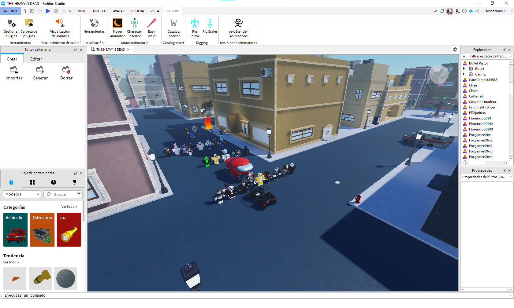

Informacion general
Explora, crea y juega como nunca antes. Esta plataforma experimental te permite sumergirte en mundos virtuales generados por la comunidad.
Desde minijuegos hasta aventuras interactivas, aquí tú decides cómo vivir la experiencia. ¡El límite es tu imaginación!.A continuación, te explicaré qué es y cómo se usa:
- ¿Que es roblox Studio?
- Roblox studio es nuestro aplicacion en la que se pueden crear
tus propias experiencias usando el codigo de programación
lua,un código muy sencillo de usar y que cualquiera puede
aprender a usar.
- ¿Que es la comunidad?
- La comunidad de Roblox es un entorno global formado por desarrolladores, jugadores, diseñadores y
creadores de contenido que colaboran, comparten ideas y aprenden juntos. A través de foros como el
DevForum, grupos dentro de la plataforma, y redes sociales como YouTube o Discord, los usuarios pueden
conectarse, resolver dudas, y encontrar recursos. Además, Roblox ofrece herramientas como Team Create
para trabajar en equipo y fomenta la participación en eventos, concursos y programas educativos. Es un
espacio ideal para crecer como desarrollador y ser parte de un ecosistema creativo y colaborativo.
¿Para que se puede usar el roblox studio?
- Programación de videojuegos complejos e interactivos
- Creación de scripts funcionales y personalizados
- Creación de eventos dinámicos y contextuales
- Creación de objetos únicos y funcionales
- Modelaje 3D detallado y optimizado
- Animación fluida y realista
- Creación de texturas visuales y coherentes
¿Como empezar a usarlo?
- Crea una cuenta de Roblox gratuita y segura
- Descarga Roblox Studio oficial y actualizado si no lo tienes instalado
- Estudia la interfaz del Studio básica y funcional
- Crea tu primer proyecto simple y funcional
- Publica y comparte tu juego terminado y jugable
- Revisa los comentarios y sugerencias de otros jugadores
- Mejora tu juego con nuevas funciones y contenido
Haz clic aquí para ver un ejemplo
